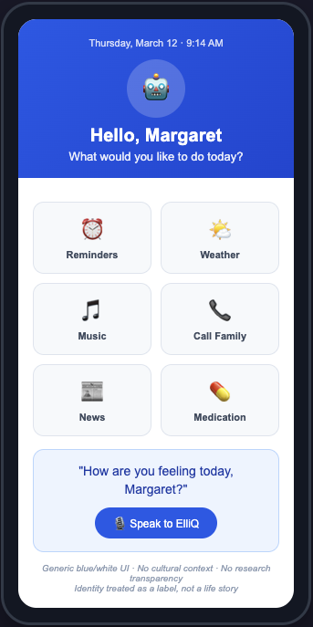
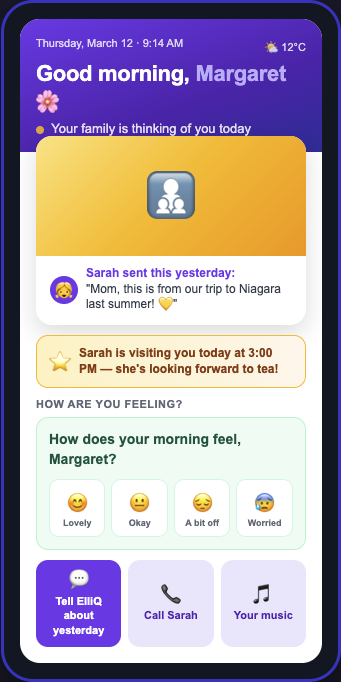
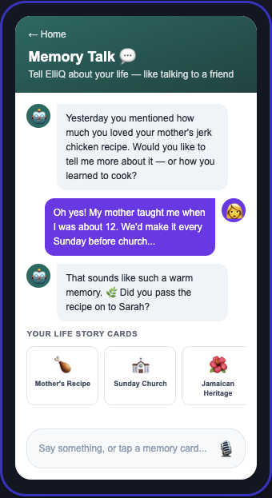
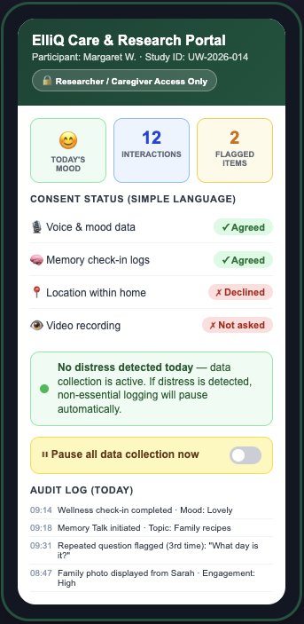

ElliQ, made by Intuition Robotics, is a companion robot designed to support seniors living at home. It can play music, send messages to family, and give medication reminders. But at its core, ElliQ was built as a task assistant, and that framing misses something important about what aging with dementia actually looks like.
For seniors with dementia, the biggest losses are not logistical. They are personal. A person may lose access to their own memories, their sense of who they are, and their cultural identity. A robot that reminds you to take a pill does nothing for that. Worse, if the design feels cold or clinical, it can increase anxiety and feelings of disorientation.
At the same time, dementia care researchers need reliable data, informed consent from a vulnerable group, and tools they can trust. Any design that adds noise, confusion, or ethical uncertainty to that process creates real problems for their work.
Redesign ElliQ to serve both seniors with dementia and dementia care researchers through Value Sensitive Design, resolving the tension between personal identity and research transparency.
The main tension is between S1 Identity and S2 Trust. The features that make ElliQ feel personal and comforting, like storing life stories, interests, and emotional states, are also the ones that generate the most sensitive research data. The more personal the design gets, the more careful you have to be about what data is being collected and shared.
When ElliQ prompts someone to share a memory, it is actively shaping what the researcher will see in the data. The warmth of the interaction and the research record are connected (Axelsson & Skantze, 2024). You cannot really separate them.
The redesign handles this by putting consent management entirely in the caregiver portal and hiding the research layer from the user. The user never encounters a clinical consent pop-up. Researchers get full transparency through a separate login. The tension is managed but not fully resolved. A future version could explore conversational consent where ElliQ naturally asks the user if they are comfortable sharing something.
Identified direct and indirect stakeholders. Key insight: ElliQ had been designed primarily around seniors but gave very little thought to the values of researchers or the ethical implications of putting a data-collecting device in the home of someone who may not fully understand what it does.
Mapped values for each stakeholder and identified where they conflict. S1 values: Well-being (emotional comfort, reduced anxiety) and Identity (recognized as a full person with history and culture). S2 values: Trust (confidence in consent and data accuracy) and Well-being (peace of mind, defensible methods, reliable system). Central tension identified: S1 Identity vs. S2 Trust.
Transformed ElliQ from a generic task assistant into a Life Story Companion. Instead of organizing ElliQ around what it can do, the redesign organized it around who the user is: their stories, culture, and relationships. This shows up across three screens: Your Story Today (home), Memory Talk (conversation), and the Care Portal (researcher/caregiver only).
The redesign transforms ElliQ from a generic task menu into a personalized Life Story Companion. The Before screen shows the original interface with a grid of function buttons. The After screens show the three core redesigned experiences: a home screen focused on personal identity, a memory talk interface for reflection, and a researcher-only care portal for ethical oversight.




Based on TA feedback and peer review, two significant changes were made for the final version.
Reduced the number of elements visible at once. The original design showed the photo, mood check-in, milestone reminder, and cultural theme simultaneously. The refined version introduces these progressively: on load, only the photo and a single greeting are visible. The mood check-in appears after a short pause. Cultural theme cards appear on a secondary scroll layer. Font size and line spacing were increased. Layout changed from grid to single vertical column.
Reframed S2 Well-being throughout the design and in the Care Portal. Added a new Research Integrity Status panel showing researchers whether all active sessions have valid consent, whether any data was paused due to distress, and whether the audit log is current. This gives researchers at-a-glance confirmation that their data collection is ethically sound.
The S2 proxy's feedback about the distress auto-pause led directly to the Research Integrity Status panel being added as a top-level summary. The S1 proxy confirmed that progressive disclosure was necessary, not just aesthetically preferable. The peer feedback tightened the home screen design.
The biggest area to improve in the next iteration would be expanding the researcher dashboard to include trend tracking and customizable alert thresholds. The Well-being requirements for S2, like longitudinal data tracking, study-customizable assessments, and caregiver feedback integration, are in the design requirements from A2 but not yet fully built out in the prototype.
A future version could also explore a more conversational consent approach where ElliQ naturally asks the user if they are comfortable sharing something, rather than relying only on the caregiver portal. Caregiver-mediated consent brings up its own question about whose interests are actually being represented.
My clearest moment of understanding came when I reread the TA feedback about S2 Well-being. My original framing was that S2 Well-being meant researchers cared about whether the senior was doing well emotionally. That is not wrong, but it is incomplete and, in a VSD sense, it misses the point.
Researchers have their own well-being at stake. If a tool they rely on produces ethically compromised data, their entire study is at risk. If they cannot verify consent status, they cannot publish. If the system continues recording during a distress event and they did not know, they are professionally and ethically exposed. The design is not just a product for users. It is also a professional tool for researchers, and they have real stakes in how it functions.
That realization changed how I thought about VSD more broadly. Every stakeholder brings their own fears, pressures, and vulnerabilities to a design, and a VSD process that only maps abstract values without understanding those pressures will miss things. Van de Poel's (2013) three-level hierarchy was useful here: the value leads to a norm, which leads to a requirement, and each level has to be specified carefully before it becomes design.
The most useful thing I took away from this process is that values are not abstract, they are specific. Trust for a researcher is not the same as trust for a user. Well-being for a senior is not the same as well-being for a caregiver. Before you can design for a value, you have to understand what that value looks like in practice for a specific person in a specific situation. That specificity is what turns a VSD checklist into an actual design tool.
If I started the VSD process again, I would spend more time on indirect stakeholders earlier. I also would have done stakeholder feedback at the A2 stage instead of waiting until the end. Even a short conversation with a proxy earlier would have surfaced the S2 Well-being misframing before it got embedded in the design.
During the peer review session, I saw designs that handled the stakeholder tension very differently. One peer kept the research layer visible to users with a simple "this session is being recorded" indicator. Another removed the researcher stakeholder almost entirely. Seeing these alternatives helped me feel more confident in my own choice while also sharpening my understanding of its tradeoffs.
Seeing peer's work and hearing their feedback was really helpful because I felt like many of the things that they were saying I was already feeling but could not fully articulate. One peer gave feedback that the concept was doing a lot of things at once, and that pushed me to tighten the home screen. Not because the concept was wrong, but because a home screen that tries to show identity, culture, family, and mood simultaneously is trying too hard.
The main concept that I learned from this course was analyzing a product through the lens of specific human values. When I first learned about VSD, I thought the goal was to identify which values matter and then check a design against them. What this project taught me is that the interesting work is in making values concrete. That is something I plan to carry into any design work I do in the future.
Axelsson, A., & Skantze, G. (2024). Recommendations for designing conversational companion robots with older adults through foundation models. Frontiers in Robotics and AI. https://pmc.ncbi.nlm.nih.gov/articles/PMC11163135/
Van de Poel, I. (2013). Translating values into design requirements. In D. Michelfelder, N. McCarthy, & D. Goldberg (Eds.), Philosophy and engineering: Reflections on practice, principles and process (pp. 253-266). Springer. https://doi.org/10.1007/978-94-007-7762-0_20